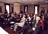
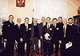

On December 17-18, 2002 the delegation of the European Society for Clinical Microbiology and Infectious Diseases (ESCMID) has attended Moscow with the official visit. The visit was organized under the joint initiative of ESCMID and Inter-Regional Association for Clinical Microbiology and Antimicrobial Chemotherapy (IACMAC, Russia)
On December 17-18, 2002 the delegation of the European Society for Clinical Microbiology and Infectious Diseases (ESCMID) has attended Moscow with the official visit. The visit was organized under the joint initiative of ESCMID and Inter-Regional Association for Clinical Microbiology and Antimicrobial Chemotherapy (IACMAC, Russia). The members of the ESCMID delegation were President R. Finch, General Secretary R. Norrby, Elected President M. Struelens, Executive Committee Professional Affairs Officer on Clinical Microbiology G. Corngalia, and Managing Director P. Shoch.
The round table discussion dedicated to the ways of collaboration between ESCMID and Russian scientists and health care specialists was held on December 17 at the Golden Ring Hotel. In the round table discussion along with Russian opinion leaders in infectious diseases and microbiology took part representatives of pharmaceutical companies and manufacturers of diagnostic materials that provided support to the visit (Bristol-Myers Squibb, Pfizer, KRKA, Lek, bioMerieux, Astra Zeneca, «Abolmed»). Total number of participants of the round table discussion from the Russian side exceeded 45.
The members of the Executive Committee have represented the main goals and objectives of the Society's activities and proposed opportunities of involvement of Russian scientists in international projects. From the Russian side the proposals for collaboration were presented by the President of IACMAC L.S. Stratchounski, member of the Council of All-Russian Society of Epidemiologists, Microbiologists and Parasitologists V.V. Zverev, member of the Council of the Alliance of Clinical Chemotherapeutists and Microbiologists S.V. Sidorenko, and by the President of All-Russian Society on Surgical Infection N.A. Efimenko. The discussion was held with the participation of the Vice-President of IACMAC A.A. Firsov, member of IACMAC Council V.A. Rudnov, and member of the Executive Committee of the Inter-Regional Association on Surgical Infections B.R. Gelfand.
The meeting in the Russian Academy of Medical Sciences was held in the afternoon on the same day. Before the official part, the delegation was received by the President of RAMS Academician V.I. Pokrovsky. During the conversation the President introduced the structure and the main purposes of scientific research. 12 directors of the leading Scientific & Research Institutes, academicians, and corresponding members of RAMS took part in the official part of the meeting. The questions of integration of the Russian scientific & research institutions in international programs with ESCMID input were discussed. The panel discussion was held with participation of academicians A.L. Ginzburg, Yu.V. Lobzin, A.M. Egorov, and Yu.V. Dudnik.
On the results of the visit the agreement on signing a memorandum about long-term collaboration between RAMS and ESCMID was reached.
On the second day of the visit the delegation was invited to the Ministry of Health of the Russian Federation. The Russian side was represented by the Head of the Administration of Scientific Medical Institutions, S.B. Tkachenko, Head of the Department of Educational Medical Institutions and Manpower Policy N.N. Volodin, Deputy Director of the Department of State Sanitary and Epidemiological Monitoring M.P. Shevireva, Head ID specialist of the Ministry of Health of the Russian Federation V.V. Maleev, Deputy Director of Science of the Central Scientific Institute of Epidemiology N.A. Semina, and Director of the Institute of Antimicrobial Chemotherapy L.S. Stratchounski.
At the meeting the delegation discussed questions of harmonization of the CME programs on clinical microbiology, collaboration between ESCMID and scientific & research institutions of the Ministry of Health of the Russian Federation, exchange programs for ID and CM specialists.
All the meetings were held in friendly and constructive manner. On behalf of the delegation the ESCMID President R. Finch has expressed sincere gratitude to the Ministry of Health, RAMS, and IACMAC for the superior organization of the visit.
Photos:
 | Presidium of the round table discussion
N.A. Efimenko, L.S. Stratchounski, R. Finch, V.V. Zverev, S.V. Sidorenko |
|  | Participants of the round table discussion |
|  | ESCMID official delegation at the reception in the office of the President of RAMS Academician V.I. Pokrovsky
U.V. Lobzin, G. Cornaglia, R. Finch, V.I. Pokrovsky, R. Norrby, M. Struelens, L.S. Stratchousnki, P. Schoch, N.P. Bochkov, R.S. Kozlov |
 | U.V. Lobzin during discussion on the meeting at RAMS |
 | ESCMID official delegation on the Red Square in Moscow
P. Shoch, M. Struelens, R.S. Kozlov, R. Norrby, L.S. Stratchounski, R. Finch, A.V. Bedenkov, D.V. Galkin |


{kind=link}
{kind=link}